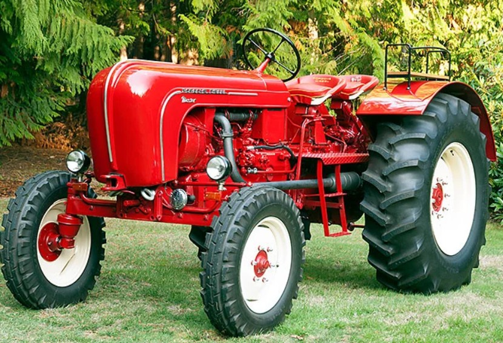
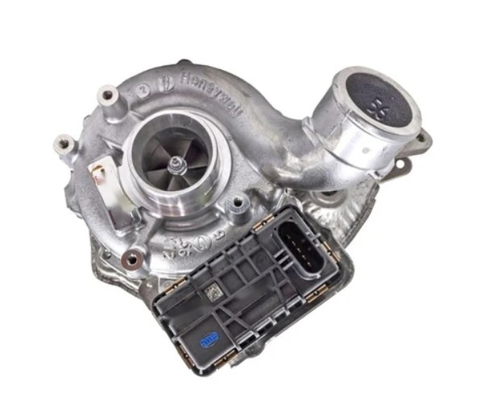
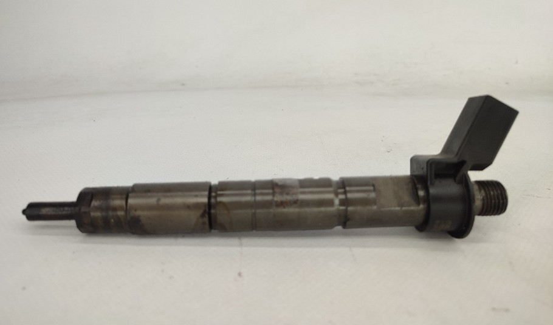
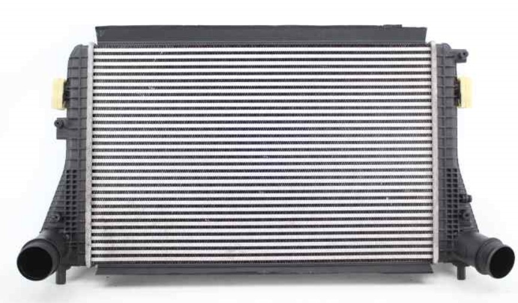
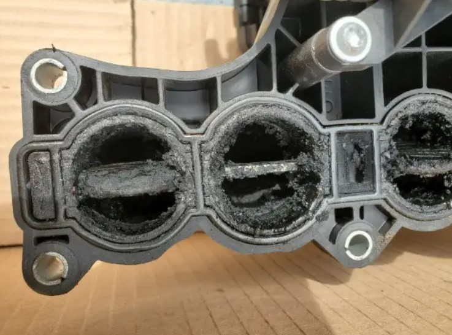
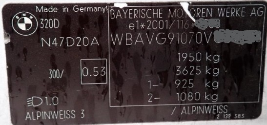
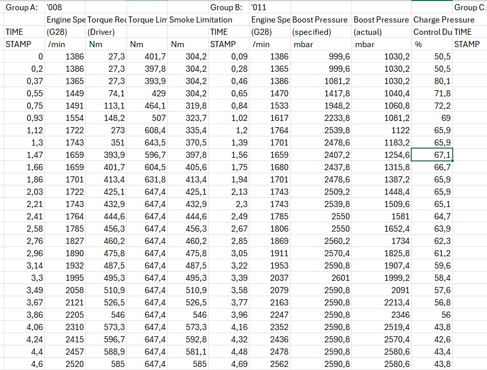
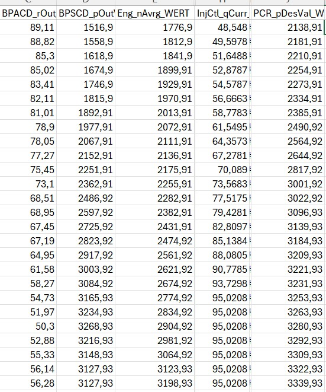

Silnik diesla – jak to naprawdę działa
Zacznijmy od stwierdzenia: silnik diesla „jedzie paliwem", a nie „mieszanką".
W benzynowym wszystko kręci się wokół powietrza: przepustnica decyduje, ile go wpuścić, a paliwo dobierane jest do niego. W dieslu jest odwrotnie. Komputer najpierw decyduje, ile paliwa chce wtrysnąć, a powietrze jest tylko dodatkiem, który musi się znaleźć w cylindrze. Dlatego w dieslu zwykle nie znajdziesz przepustnicy (spotykana klapa dolotowa służy głównie do wyciszania silnika przy gaszeniu i do wspomagania EGR, a nie do sterowania mocą), a mocą steruje się w zasadzie paliwem.
Jak to było kiedyś
Kilkadziesiąt lat temu wolnossący diesel był prostą maszyną: żadnej przepustnicy, przepływomierza, czujnika ciśnienia w kolektorze (MAP) ani turbiny. Silnik zasysał stałą porcję powietrza wynikającą z pojemności cylindra, a pedał gazu był połączony linką z pompą wtryskową. Wciskasz pedał, pompa podaje więcej paliwa. Koniec historii.

Paliwo trafiało wtedy do komory wstępnej, a nie bezpośrednio do cylindra jak dziś. Ówczesne pompy wytwarzały po prostu dużo niższe ciśnienia.
A skoro nie ma świecy, to skąd zapłon? Diesel nazywa się silnikiem z zapłonem samoczynnym: powietrze jest tak mocno sprężone i gorące, że wtryśnięte paliwo zapala się „samoczynnie", bez żadnej iskry.
Po co więc turbo, skoro diesel „jedzie paliwem"?
Bo paliwa nie da się wlewać w nieskończoność. Do danej ilości powietrza można wtrysnąć paliwo w szerokim zakresie, ale jednak nie bez ograniczeń: trzeba mieć czym je spalić. Turbosprężarka zmieniła zasady gry: wciska do cylindra więcej powietrza, niż wynika z jego pojemności, więc można wtrysnąć więcej paliwa i dostać moc większą, niż sugerowałaby pojemność silnika.

Większość turbodiesli ma turbosprężarkę z tzw. zmienną geometrią. To blaszki, których ułożenie decyduje, pod jakim kątem spaliny uderzają w wirnik turbiny. Komputer może więc regulować jej wydajność w zależności od ilości paliwa i znów widać, że to paliwo jest decydujące, a powietrze dopasowuje się do niego (w silniku benzynowym jest odwrotnie).
Do tego dochodzi zawór EGR, czyli recyrkulacji spalin: wpuszcza spaliny z powrotem do dolotu i spalinami „zbija" ilość powietrza. Chodzi o ekologię (mniej tlenków azotu), a w niektórych silnikach pomaga też szybciej się nagrzać.
Jak komputer steruje dieslem w pigułce
Wolne obroty
Na wolnych obrotach (ok. 700 obr/min po rozgrzaniu silnika) komputer pilnuje jednej rzeczy: zadanych obrotów biegu jałowego. Obroty spadają, to dorzuca paliwa, rosną, to obcina. Żadnych silniczków krokowych ani przepustnic, które dolewałyby powietrza.
Wtryskiwacze nie są idealnie takie same (nawet nowe – dlatego mamy kody IMA wtryskiwaczy), a cylindry zużywają się inaczej, więc komputer na bieżąco liczy korekcje dla każdego cylindra osobno, żeby silnik chodził równo. Taka ciekawostka: w automatach opory na „luzie" są większe niż w manualach, więc w logach zobaczysz tam zwykle więcej paliwa podczas pracy silnika na wolnych obrotach.
Teraz małe uproszczenie, które bardzo ułatwi rachunki: przyjmijmy, że 1 m³ powietrza waży 1 kg (w rzeczywistości przy 20°C to ok. 1,2 kg). Wtedy cylinder o pojemności 0,5 l „zasysa" ok. 500 mg powietrza.
W mapach EGR przy niskim obciążeniu zadana ilość powietrza często wynosi np. 280 mg. Komputer widzi różnicę (500 zamiast 280) i otwiera zawór EGR, który wpuszcza spaliny i zbija ilość powietrza. Właściciele starszych VW TDI mogą to podejrzeć w logu 003 (a w 003 BS EGR naprzemiennie się włącza i wyłącza).
Jazda z gazem
Inaczej to wygląda, gdy wciskasz pedał: komputer dostaje sygnał „chcę moc" i przelicza to na ilość paliwa, a do tej ilości paliwa potrzebuje określonej ilości powietrza (powietrze jest dodatkiem do paliwa, pamiętasz?). Jeżeli potrzeba więcej powietrza, niż cylinder zassie sam, komputer wysteruje turbosprężarkę tak, żeby dostarczyła brakującą resztę.
Wtrysk: czas, ciśnienie, kąt
Dzisiejsze pompy common rail budują ciśnienie od ok. 270 bar na wolnych obrotach aż do ok. 2700 bar w nowoczesnych, wysilonych silnikach. Ciśnieniem steruje np. zawór na listwie paliwowej, skąd paliwo idzie do wtryskiwaczy.

Wtryskiwacz to w uproszczeniu kran: komputer go otwiera i zamyka. Ten sam kran w łazience, otwarty na ten sam czas, wleje różną ilość wody zależnie od ciśnienia w instalacji. Z paliwem jest tak samo: tę samą ilość można wtrysnąć krócej pod większym ciśnieniem albo dłużej pod mniejszym.
Ilość paliwa mierzymy w mm³ lub mg (1 m³ oleju napędowego waży ok. 830 kg, więc mm³ przelicza się na mg, choć wynik zależy od temperatury paliwa).
Czas wtrysku podaje się najczęściej w mikrosekundach (1000 µs to jedna tysięczna sekundy). Skoro znamy obroty, możemy zamienić czas na stopnie obrotu wału, i to jest ciekawe: te same 1000 µs przy 4000 obr/min to aż 24 stopnie obrotu wału, a przy 1000 obr/min tylko 6. Do tego dochodzi czas samego spalania, bo ono też trwa, i w ten sposób dochodzimy do kąta wtrysku, czyli do tego, ile stopni przed górnym martwym punktem (GMP) trzeba zacząć wtrysk. Właściciele starszych VW TDI mogą go zobaczyć w logu 004, a po włączeniu 004 Basic Setting komputer naprzemiennie przestawia kąt wtrysku do skrajnych wartości, więc można obserwować jego wpływ na pracę silnika.
Kalkulator: czas wtrysku na stopnie obrotu wału
Wpisz czas trwania wtrysku i obroty. Czas w stopniach obrotu wału przelicza się automatycznie.
Warto wiedzieć: na wolnych obrotach i przy małym obciążeniu producenci czasem wtryskują paliwo już po GMP.
Powietrze, turbo i AFR
Stosunek ilości powietrza do paliwa (w mg) nazywa się AFR (air-fuel ratio). W przeciwieństwie do benzyny akceptowalny przedział jest ogromny. Cylinder 0,5 l przy wyłączonym EGR może na wolnych obrotach dostać np. 6 mg paliwa (AFR 500/6, czyli ponad 80!), ale równie dobrze przy tej samej ilości powietrza 30 mg (AFR 500/30 ≈ 16,7).
Przyjmijmy, że na niskich obrotach skrajną wartością w aucie seryjnym jest AFR ok. 15 (stechiometria diesla to ok. 14,5, więc to już granica silnego dymienia). Dla 500 mg powietrza daje to maksymalnie ok. 33 mg paliwa, i tu wchodzi turbo. Na wysokich obrotach AFR 15 byłby już „ostry", dlatego w aucie seryjnym realne są tam wartości 17–19. Na niskich obrotach ok. 15–16 jest akceptowane fabrycznie, bo więcej paliwa to więcej energii w spalinach i szybsze pobudzenie turbiny.
Ile potrafi turbo? Seryjne turbodiesle budują ciśnienie względne od ok. 1 bara w starszych, niewysilonych silnikach do ok. 3 barów (czyli ok. 4 barów bezwzględnych) w tych najbardziej wysilonych.
Policzmy na prostym przykładzie. Załóżmy 1,5 bara doładowania względnego. Razem z atmosferycznym (ok. 1 bar) daje to 2,5 bara ciśnienia bezwzględnego. Potraktujmy to jako mnożnik pojemności: nasz cylinder 0,5 l ma teraz „wirtualnie" 1,25 l, więc zamiast 500 mg powietrza mamy 1250 mg. Przy AFR 15 można wtrysnąć już nie 33, a 83 mg paliwa, i to przekłada się na większą moc.
Oczywiście świat nie jest idealny. Cylinder nie napełnia się w 100% (w mocnych dieslach bywa to około 90%), a sprężarka podgrzewa powietrze (wystarczy popompować koło roweru ręczną pompką, żeby poczuć, jak się grzeje). Gorące powietrze jest rzadsze, więc w tej samej objętości mieści się go mniej. Żeby je schłodzić, stosuje się chłodnicę powietrza, czyli intercooler.

Przepływomierz: od kg/h do mg na suw
W dieslu najczęściej stosuje się przepływomierze podające powietrze w kg/h. Komputer przelicza je wewnętrznie na mg na suw, czyli właśnie na to, o czym mówiliśmy do tej pory.
Przykład: silnik 3 l, 6 cylindrów, 4000 obr/min, 675 kg/h powietrza. Daje to dokładnie 937,5 mg powietrza na cylinder na cykl (675 000 000 mg ÷ 60 min ÷ (6 cylindrów × 2000 cykli na minutę)). Tu policzmy już dokładniej: przy 50°C za intercoolerem gęstość powietrza to ok. 1,08 kg/m³, więc cylinder 0,5 l mieści przy 1 barze ok. 540 mg, a przy napełnianiu na poziomie 90% ok. 485 mg. Żeby upchnąć 937,5 mg, potrzebne jest ciśnienie ok. 1,9 bara bezwzględnego, czyli ok. 0,9 bara nadciśnienia. Przy AFR 18 (bardziej realnym w aucie seryjnym) mamy 937,5/18, czyli ok. 52 mg paliwa.
Chcesz sprawdzić samemu? Wpisz dane do kalkulatorów poniżej.
Kalkulator: przepływ powietrza na mg na cylinder
Wpisz dane silnika i przepływ z przepływomierza (kg/h). Wynik przelicza się automatycznie.
Przyjęto ciśnienie otoczenia 1 bar. Ciśnienie i doładowanie to wartości orientacyjne, zależne od założonej temperatury i napełniania cylindra.
Kalkulator: AFR i lambda z doładowania i dawki paliwa
Wpisz dane silnika, doładowanie i dawkę paliwa. Ilość powietrza, AFR i lambda przeliczają się automatycznie.
Przyjęto ciśnienie otoczenia 1 bar oraz stechiometrię diesla 14,5:1 (lambda 1 = AFR 14,5). Wartości są orientacyjne i zależą od założonej temperatury i napełniania cylindra.
Logika komputera w jednym akapicie
Sterowanie dieslem to wtryśnięcie właściwej ilości paliwa we właściwy sposób i dostarczenie właściwej ilości powietrza do jego spalenia. Komputer ustala, ile paliwa podać i jak, wylicza, ile do tego potrzeba powietrza, a potem tak steruje turbosprężarką, żeby je dostarczyć (o ile potrzebuje go więcej, niż cylinder zassie sam).
Kto Ci ogranicza moc przy pełnym gazie?
- Marketingowiec: uznał, że nie zapłaciłeś za BMW E87 118d 143 KM, a jedynie za 116d 116 KM, albo obciął moc, bo ubezpieczenie byłoby za drogie.
- Inżynier: stwierdził, że sprzęgło się rozleci przy pełnej mocy.
- Czujnik temperatury: wykrył przegrzanie silnika albo zbyt gorące spaliny lub dolot.
- Przepływomierz: poinformował, że powietrza jest za mało (np. turbo jeszcze nie zbudowało ciśnienia).
- Skrzynia biegów: wysłała do silnika wiadomość: „za dużo, bo się rozlecę".
- Systemy bezpieczeństwa: tną moc, bo auto już „leci bokiem".
DPF, EGR i AdBlue: dlaczego bywają kłopotliwe
Niestety diesle z natury dymią (stare auta bez filtra cząstek stałych miały dlatego rury wydechowe skierowane w dół) i może dlatego ekolodzy ich nie lubią. Żeby zmieścić się w normach, od ok. 20 lat mają DPF. Dobre dla środowiska, gorsze dla kieszeni i osiągów: filtr jest przeszkodą dla spalin, powoduje grzanie się silnika i ogranicza potencjał turbosprężarki.
Wcześniej producenci walczyli z tlenkami azotu zaworem EGR. A od ponad 10 lat dochodzi AdBlue, czyli roztwór mocznika, który te tlenki dodatkowo redukuje.

Niestety wszystkie te systemy w autach z dużymi przebiegami lubią się psuć, a naprawa bywa droga. Dlatego część właścicieli decyduje się je usunąć. Powody są dwa: finanse (często po nieudanej wcześniejszej naprawie) i tuning (duża „tuningowa" turbosprężarka może z DPF pracować gorzej niż seryjna). Warto wiedzieć, że naprawa EGR to często po prostu wyczyszczenie dolotu i ewentualnie wymiana chłodnicy spalin.
Co na to prawo? Usunięcie DPF lub AdBlue jest modyfikacją niedozwoloną, a takie auto nie ma prawa przejść przeglądu technicznego. Obecnie, poza obejrzeniem układu wydechowego, diagnosta sprawdza (powinien ;) zadymienie przy pełnym wciśnięciu gazu (usunięcie AdBlue tego nie zmienia). Auto podczas testu stoi w miejscu. Norma zadymienia jest wpisana w ramce na tabliczce znamionowej, bez jednostki (np. 0,53; to współczynnik absorpcji światła w m⁻¹, a wartość zależy od auta i normy, jaką ma spełniać).

Gdy procedura przeglądu się zmieni (np. będą weryfikować oryginalność oprogramowania, odczyt ciśnienia wstecznego spalin), żadne „trikowe" przeglądy już nie przejdą, a do tunerów zaczną się zgłaszać właściciele diesli z prośbą o ponowne włączenie DPF i AdBlue. W Polsce średni wiek auta to obecnie ok. 16 lat, a nowy DPF z czujnikiem różnicowym i wymianą może kosztować ok. 10 tys. zł (zależnie od auta), więc jest, jak jest…
Logi i diagnostyka: zajrzyj do komputera silnika
Komputer silnika to nie blackbox. Zwykle można odczytać nie tylko kody usterek, ale i bieżące parametry pracy. Właściciele starszych VW TDI (1.9 TDI, 2.0 TDI, 2.5 TDI) mogą dzięki VAGCOM/VCDS (lub innemu oprogramowaniu diagnostycznemu o podobnych możliwościach) zobaczyć obroty, doładowanie zadane i uzyskane, wysterowanie geometrii turbiny, zadaną i aktualną ilość powietrza, dawkę paliwa i wiele innych. W starszych autach grupy VW robi się to przez „Measuring Blocks", w nowszych przez „Advanced Measuring Values".

W autach BMW do dyspozycji są INPA, ISTA (z ograniczoną liczbą parametrów), a także np. TestO i BimmerTool.

Pamiętaj tylko, że tanie, uniwersalne interfejsy diagnostyczne obsługują zwykle jedynie standard ELM327, który ma sporo ograniczeń (np. ciśnienie doładowania zatrzymuje się na 2550 hPa, czyli 1,55 bara względnego).